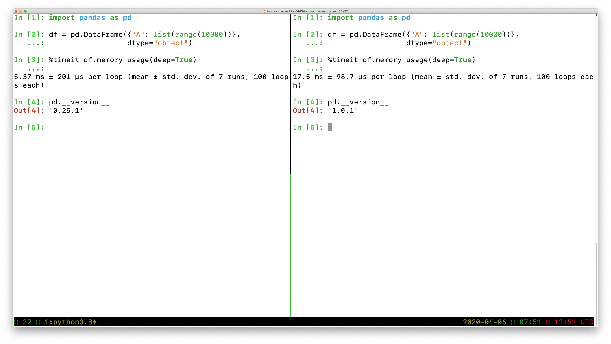
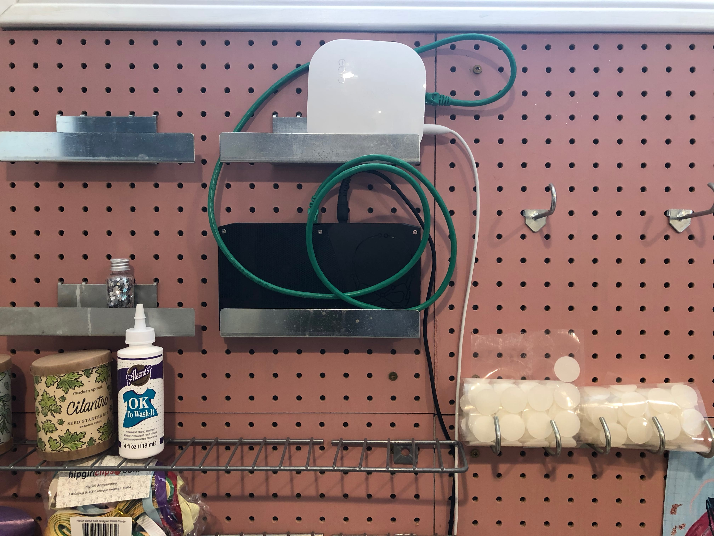

As pandas' documentation claims: pandas provides high-performance data structures. But how do we verify that the claim is correct? And how do we ensure that it stays correct over many releases. This post describes
- pandas' current setup for monitoring performance
- My personal debugging strategy for understanding and fixing performance regressions when they occur.
I hope that the first section topic is useful for library maintainers and the second topic is generally useful for people writing performance-sensitive code.
Know thyself
The first rule of optimization is to measure first. It's a common trap to think you know the performance of some code just from looking at it. The difficulty is compounded when you're reviewing a diff in a pull request and you lack some important context. We use benchmarks to measure the performance of code.
There's a strong analogy between using unit tests to verify the correctness of
code and using benchmarks to verify its performance. Each gives us some
confidence that an implementation behaves as expected and that refactors are not
introducing regressions (in correctness or performance). And just as you use can
use a test runner like unittest or pytest to organize and run unit tests,
you can use a tool to organize and run benchmarks.
For that, pandas uses asv.
airspeed velocity (
asv) is a tool for benchmarking Python packages over their lifetime. Runtime, memory consumption and even custom-computed values may be tracked. The results are displayed in an interactive web frontend that requires only a basic static webserver to host.
Detecting Regressions
asv is designed to be run continuously over a project's lifetime. In theory, a
pull request could be accompanied with an asv report demonstrating that the
changes don't introduce a performance regression. There are a few issues
preventing pandas from doing that reliably however, which I'll go into later.
Handling Regressions
Here's a high-level overview of my debugging process when a performance regression is discovered (either by ASV detecting one or a user reporting a regression).
To make things concrete, we'll walk through this recent pandas issue, where a slowdown was reported. User reports are often along the lines of
DataFrame.memory_usageis 100x slower in pandas 1.0 compared to 0.25
In this case, DataFrame.memory_usage was slower with object-dtypes and
deep=True.
v1.0.3: memory_usage(deep=True) took 26.4566secs
v0.24.0: memory_usage(deep=True) took 6.0479secs
v0.23.4: memory_usage(deep=True) took 0.4633secs
The first thing to verify is that it's purely a performance regression, and not a behavior change or bugfix, by ensuring that the outputs match between versions. Sometimes correctness requires sacrificing speed. In this example, we confirmed that the outputs from 0.24 and 1.0.3 matched, so we focused there.
Now that we have what seems like a legitimate slowdown, I'll reproduce it
locally. I'll first activate environments for both the old and new versions (I
use conda for this, one environment per version
of pandas, but venv works as well assuming the error isn't specific to a
version of Python). Then I ensure that I can reproduce the slowdown.

In [1]: import pandas as pd
In [2]: df = pd.DataFrame({"A": list(range(10000))}, dtype=object)
In [3]: %timeit df.memory_usage(deep=True)
5.37 ms ± 201 µs per loop (mean ± std. dev. of 7 runs, 100 loops each)
In [4]: pd.__version__
Out[4]: '0.25.1'
versus
In [1]: import pandas as pd
In [2]: df = pd.DataFrame({"A": list(range(10000))}, dtype=object)
In [3]: %timeit df.memory_usage(deep=True)
17.5 ms ± 98.7 µs per loop (mean ± std. dev. of 7 runs, 100 loops each)
In [4]: pd.__version__
Out[4]: '1.0.1'
So we do have a slowdown, from 5.37ms -> 17.5ms on this example.
Once I've verified that the outputs match and the slowdown is real, I turn to snakeviz (created by Matt Davis, which measures performance at the function-level. For large enough slowdowns, the issue will jump out immediately with snakeviz.
From the snakeviz docs, these charts show
the fraction of time spent in a function is represented by the extent of a visualization element, either the width of a rectangle or the angular extent of an arc.
I prefer the "sunburst" / angular extent style, but either works.
In this case, I noticed that ~95% of the time was being spent in
pandas._libs.lib.memory_usage_of_object, and most of that time was spent in
PandasArray.__getitem__ in pandas 1.0.3. This is where a bit of
pandas-specific knowledge comes in, but suffice to say, it looks fishy1.
As an aside, to create and share these snakeviz profiles, I ran the output of
the %snakeviz command through
svstatic and
uploaded that as a gist (using gist). I
then pasted the "raw" URL to https://rawgit.org/ to get the URL embedded here as
an iframe.
Line Profiling
With snakeviz, we've identified a function or two that's slowing things down. If
I need more details on why that's function is slow, I'll use
line-profiler. In our example, we've
identified a couple of functions, IndexOpsMixin.memory_usage and
PandasArray.__getitem__ that could be inspected in detail.
You point line-profiler one or more functions with -f and provide a
statement to execute. It will measure things about each line in the function,
including the number of times it's hit and how long is spent on that line (per
hit and total)
In [9]: %load_ext line_profiler
In [10]: %lprun -f pd.core.base.IndexOpsMixin.memory_usage df.memory_usage(deep=True)
Total time: 0.034319 s
File: /Users/taugspurger/miniconda3/envs/pandas=1.0.1/lib/python3.8/site-packages/pandas/core/base.py
Function: memory_usage at line 1340
Line # Hits Time Per Hit % Time Line Contents
==============================================================
1340 def memory_usage(self, deep=False):
...
1363 1 56.0 56.0 0.2 if hasattr(self.array, "memory_usage"):
1364 return self.array.memory_usage(deep=deep)
1365
1366 1 11.0 11.0 0.0 v = self.array.nbytes
1367 1 18.0 18.0 0.1 if deep and is_object_dtype(self) and not PYPY:
1368 1 34233.0 34233.0 99.7 v += lib.memory_usage_of_objects(self.array)
1369 1 1.0 1.0 0.0 return v
THe % time column clearly points to lib.memory_usage_of_objects. This is a
Cython function, so we can't use line-profiler on it. But we know from the
snakeviz output above that we eventually get to PandasArray.__getitem__
In [11]: %lprun -f pd.arrays.PandasArray.__getitem__ df.memory_usage(deep=True)
Timer unit: 1e-06 s
Total time: 0.041508 s
File: /Users/taugspurger/miniconda3/envs/pandas=1.0.1/lib/python3.8/site-packages/pandas/core/arrays/numpy_.py
Function: __getitem__ at line 232
Line # Hits Time Per Hit % Time Line Contents
==============================================================
232 def __getitem__(self, item):
233 10000 4246.0 0.4 10.2 if isinstance(item, type(self)):
234 item = item._ndarray
235
236 10000 25475.0 2.5 61.4 item = check_array_indexer(self, item)
237
238 10000 4394.0 0.4 10.6 result = self._ndarray[item]
239 10000 4386.0 0.4 10.6 if not lib.is_scalar(item):
240 result = type(self)(result)
241 10000 3007.0 0.3 7.2 return result
In this particular example, the most notable thing is that fact that we're
calling this function 10,000 times, which amounts to once per item on our 10,000
row DataFrame. Again, the details of this specific example and the fix aren't
too important, but the solution was to just stop doing that2.
The fix was provided by
@neilkg soon after the issue was identified, and
crucially included a new asv benchmark for memory_usage with object dtypes.
Hopefully we won't regress on this again in the future.
Workflow issues
This setup is certainly better than nothing. But there are a few notable problems, some general and some specific to pandas:
Writing benchmarks is hard work (just like tests). There's the general issue of writing and maintaining code. And on top of that, writing a good ASV benchmark requires some knowledge specific to ASV. And again, just like tests, your benchmarks can be trusted only as far as their coverage. For a large codebase like pandas you'll need a decently large benchmark suite.
But that large benchmark suite comes with it's own costs. Currently pandas' full suite takes about 2 hours to run. This rules out running the benchmarks on most public CI providers. And even if we could finish it in time, we couldn't really trust the results. These benchmarks, at least as written, really do need dedicated hardware to be stable over time. Pandas has a machine in my basement, but maintaining that has been a time-consuming, challenging process.

This is my current setup, which stuffs the benchmark server (the black Intel NUC) and a router next to my wife's art storage. We reached this solution after my 2 year old unplugged the old setup (on my office floor) one too many times. Apologies for the poor cabling.
We deploy the benchmarks (pandas and a few other NumFOCUS projects) using
Ansible. The scripts get the benchmarks in place, Airflow to run them nightly,
and supervisord to kick everything off. The outputs are rsynced over to the
pandas webserver and served at https://pandas.pydata.org/speed/. You can see
pandas' at https://pandas.pydata.org/speed/pandas/. If this seems like a house
of cards waiting to tumble, that's because it is.
Pandas has applied for a NumFOCUS small development grant to improve our
benchmark process. Ideally maintainers would be able to ask a bot @asv-bot run
-b memory_usage which would kick off a process that pulled down the pull
request and ran the requested benchmarks on a dedicated machine (that isn't
easily accessible by my children).
Recap
To summarize:
- We need benchmarks to monitor performance
- We use tools like
asvto organize and benchmarks continuously - When regressions occur, we use
snakevizandline-profilerto diagnose the problem
-
PandasArray is a very simple wrapper that implements pandas' ExtensionArray interface for 1d NumPy ndarrays, so it's essentially just an ndarray. But, crucially, it's a Python class so it's getitem is relatively slow compared to numpy.ndarray's getitem. ↩
-
It still does an elementwise getitem, but NumPy's
__getitem__is much faster thanPandasArray's. ↩